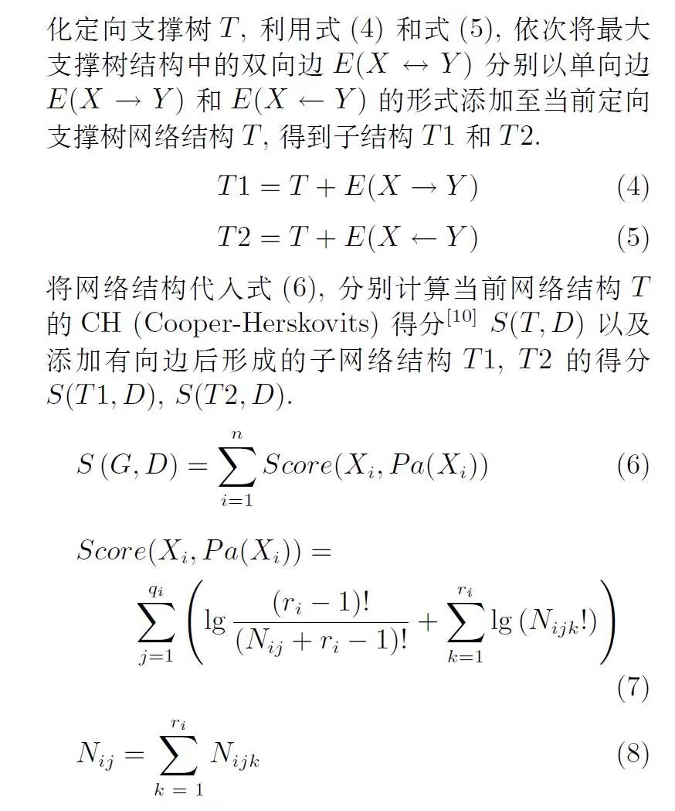
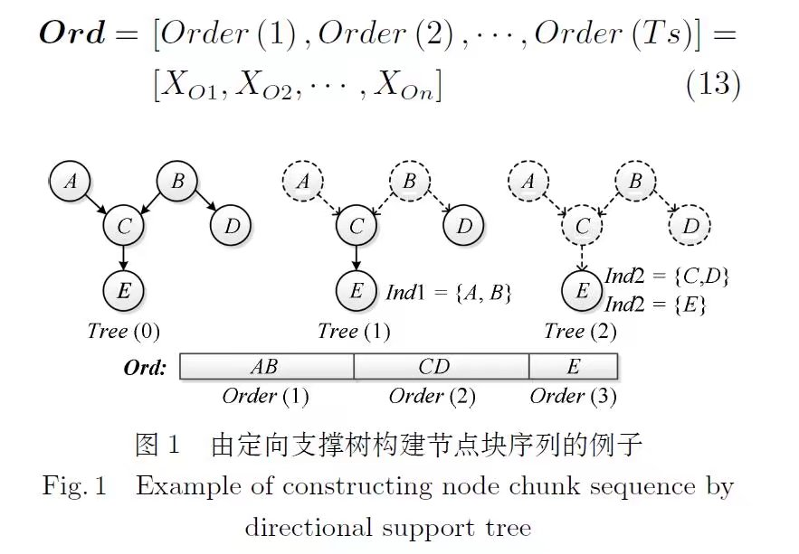

《基于节点块序列约束的局部贝叶斯网络结构搜索算法》阅读笔记
Abstract
针对K2 算法过度依赖节点序和节点序搜索算法评价节点序效率较低的问题, 提出一种基于节点块序列约束的局部贝叶斯网络结构搜索算法, 该算法首先通过评分定向构建定向支撑树结构, 在此基础上构建节点块序列, 然后利用节点块序列确定每个节点的潜在父节点集, 通过搜索每个节点的父节点集构建网络结构, 最后对该结构进行非法结构修正得到最优贝叶斯网络结构. 利用标准网络将算法与几种不同类型的改进算法进行对比分析, 验证该算法的有效性.
Motivation
1.节点序空间中搜索最优节点序时，评估节点序效率低下。
算法描述
NCSC 算法：算法首先对最大支撑树进行评分定向构建定向支撑树结构, 利用该结构搜索得到节点块序列。 之后利用节点块序列作为搜索顺序, 将定向支撑树结构作为先验知识, 通过节点块序列确定每个节点的潜在父节点集, 对每个节点的父节点集进行搜索, 构建初始网络结构。最后对该结构进行非法结构修正, 得到最优贝叶斯网络结构。通过将位于相同节点块的节点视为等价节点, 避免对节点块内元素进行排列, 解决了基于节点序搜索的贝叶斯结构学习算法评价节点序时间代价严重的问题, 可以在不借助专家知识的情况下得到较为精确的贝叶斯网络结构.
1.1 计算互信息
根据上式计算得到任意两节点之间的互信息
1.2 根据互信息构建最大支撑树
此时，最大支撑树的边是无向的，或者说是双向的，需要对其进行定向
1.3 最大支撑树的边定向
根据上述不断加边，评分的方法，给最大支撑树定向。
1.4 构建节点块
具体方式：同图结构拓扑序，将当前状态下所有没有父节点的节点集合作为order(t)，然后去掉该节点集包含的所有节点和它们连接其他节点的边。
1.5 计算各节点在其父节点为空时和为最大支撑树里的父节点时的评分
当前节点父节点为空集和为最大支撑树中的父节点集合这两种情况，谁评分高，就取该评分作为当前节点的评分S_old。
1.6 重新选择各节点父节点
按照1.4节中构建的节点块，对当前节点，选择在其所处节点块之前的节点和其所处节点块除它自己外的其他节点。若其评分大于S_old,则将其加入父节点集中，并更新S_old。
1.7 环路判断及修正
检测出环路，然后将环路中的边分别删除，计算删除后的评分，最后取删除后降低评分最小的路径删除。
2 伪代码如下
3 个人想法
3.1 总体思想
总体来看，和K2算法很类似，主要区别就是对于同一个节点块中，可以选择除自己外的所有节点，K2算法只能选前面的。
此外，和空集做了比较。
但是，还是非常依赖最大支撑树定向结构的准确性。如果对最大支撑树的定向就存在很大问题的话，后面估计神仙也难救了。
3.2 细节部分
K2算法不存在环路，但是这个方法是可能存在的。原因就在于，如果可以选择相同节点块的节点，则对于节点A,B,可能存在A->B，同时也存在B->A，因此需要加上环路检测和修正部分。
此外，实验结构有点太好了，感觉最大支撑树定向的准确度很难达到这个精度。
3.3 参考价值
1. 1.3节中讲的最大支撑树定向方式，感觉可以试试，说不定很好呢。
2. 对于节点序评估问题，可以尝试着用这个方法根据节点序构造完整贝叶斯网络结构进行评分，代替K2算法和构造最大支撑树再评分的方法。
《基于节点块序列约束的局部贝叶斯网络结构搜索算法》阅读笔记
http://example.com/2021/12/07/《基于节点块序列约束的局部贝叶斯网络结构搜索算法》阅读笔记/